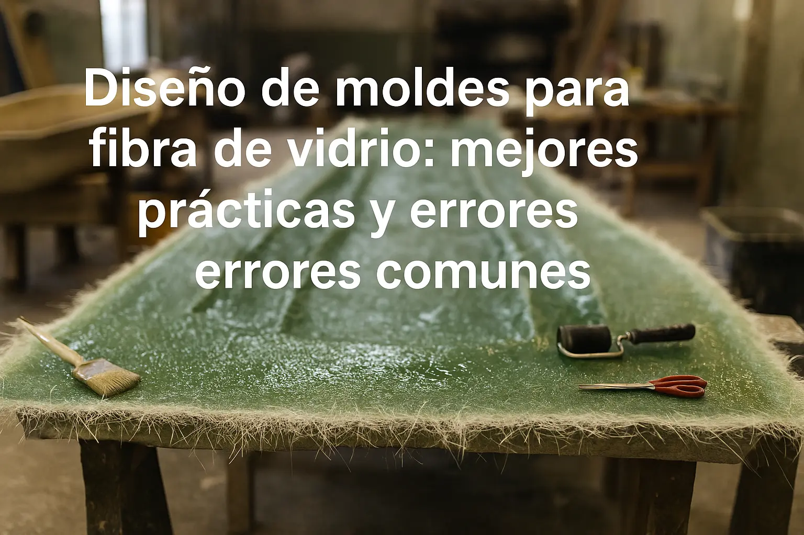

Diseño de moldes para fibra de vidrio: mejores prácticas y errores comunes
Publicado por CONAVRE | Abril 2025
El éxito de cualquier proyecto en fibra de vidrio comienza con un molde bien diseñado. Desde las primeras reuniones con el cliente, evaluamos el uso final, las formas complejas y los requerimientos de producción en serie. Un molde preciso garantiza acabados homogéneos, reduce desperdicios y optimiza tiempos de fabricación, lo cual se traduce en menores costes y mayor satisfacción.
1. Selección de materiales y tolerancias
La elección del material para el molde define la facilidad de trabajo y la precisión del resultado. Algunas opciones comunes son:
- Madera contrachapada tratada: económica y fácil de cortar con herramientas básicas. Requiere sellado periódico con barnices o resinas para evitar hinchazón por la humedad.
- Aluminio básico: resistente al desgaste y con poca deformación térmica. Permite mantener tolerancias de alrededor de ±0,5 mm usando herramientas de medición sencillas como calibres digitales.
- Láminas metálicas con capa de resina epóxica: ofrecen un buen acabado superficial y resistencia química cuando se aplican correctamente. Conviene para moldes que demanden detalles más finos.
Para un taller que está comenzando, es útil practicar mediciones con calibres manuales o plantillas antes de pasar a métodos más avanzados.
2. Técnicas de acabado y desmolde
Un desmolde limpio y sin marcas depende de cuidados sencillos:
- Aplicación de liberadores: usar cera o spray desmoldeante en varias capas, dejando secar entre aplicaciones para lograr una capa uniforme.
- Lijado progresivo: empezar con lija de grano 180 para nivelar imperfecciones y terminar con grano 400 para suavizar la superficie. En pequeños talleres, esto puede hacerse manualmente.
- Gelcoat de curado lento: elegir formulaciones que permitan trabajar con la pieza sin prisas. Se aplica con rodillo o brocha, cuidando que no queden burbujas.
Incluso sin cámaras climatizadas, mantener el taller a temperatura estable (al menos 18–22 °C) ayuda a evitar microfisuras.
3. Errores comunes y cómo evitarlos
Estos fallos suelen aparecer pero se pueden corregir fácilmente:
- Molde mal alineado: provoca juntas visibles. Solución: usar pinzas o abrazaderas manuales para asegurar ambas mitades durante el curado.
- Demasiado desmoldeante: impide la adhesión de la primera capa de fibra. Es mejor aplicar la mínima cantidad recomendada y limpiar el exceso.
- Curado desigual: genera contracciones. Si no hay control de temperatura mecánico, ventilar el espacio lentamente y evitar corrientes de aire frío.
Con estas prácticas, se puede obtener moldes consistentes y reducir la necesidad de retrabajo.
4. De positivo a negativo: el trabajo artesanal tras el molde
En proyectos de gran envergadura —como la construcción de embarcaciones o refugios— suele crearse primero un “positivo”: una réplica en madera, espuma rígida o metal ligero que define cada detalle de la forma final.
A partir de ese positivo se construye el molde negativo, aplicando gelcoat y capas de fibra. Este paso, completamente artesanal, exige un pulido cuidadoso y un desmolde de prueba para garantizar que todas las unidades producidas conserven la fidelidad del diseño original.
Preguntas Frecuentes
¿Por qué se suele crear primero un positivo antes del molde definitivo?
El positivo —una réplica en materiales económicos como espuma de poliuretano o madera— permite validar forma, dimensiones y detalles antes de invertir en el molde negativo final. Esto reduce errores costosos y facilita ajustes previos.
¿Cómo se transforma el positivo en un molde negativo?
Se aplica gelcoat sobre el positivo, luego capas de fibra y resina para generar la capa estructural. Una vez curado, se desmolda y se obtiene el negativo, que servirá como molde de trabajo para las piezas definitivas.
¿Qué materiales puedo usar en un taller básico para fabricar moldes?
Además de madera contrachapada sellada y resinas convencionales, puedes empezar usando masillas epóxicas de dos componentes, liberadores en spray y fibras de vidrio estándar. Herramientas manuales como lijas, pistolas de liberador y raspadores son suficientes para talleres incipientes.
¿Cómo evito que el molde negativo se deforme con el paso del tiempo?
Mantén el molde almacenado en un lugar seco y a temperatura estable, evita golpes y aplica una capa de cera renovadora antes de ponerlo en reposo para proteger la superficie.
Para fabricar tu molde, cotiza tu proyecto o descubre ejemplos en nuestro portafolio.
Artículos Relacionados

¿Qué resina usar para tu embarcación o proyecto en fibra de vidrio?
Conoce las diferencias entre resina poliéster, epóxica y viniléster para tomar la mejor decisión.
Leer Más
Tipos de fibra de vidrio y su utilidad en embarcaciones
Aprende cuándo usar velo, manta M300/M400 o woven roving en tus proyectos.
Leer Más